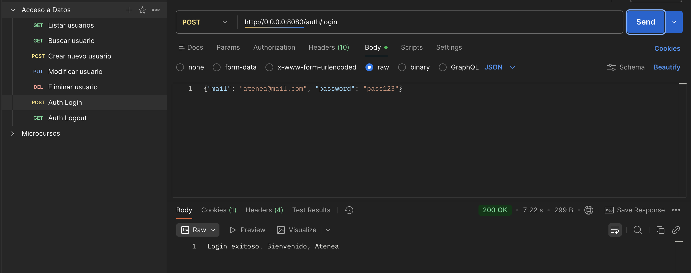
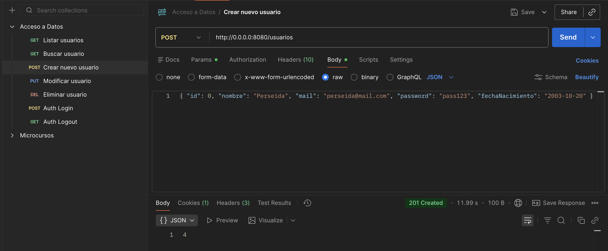
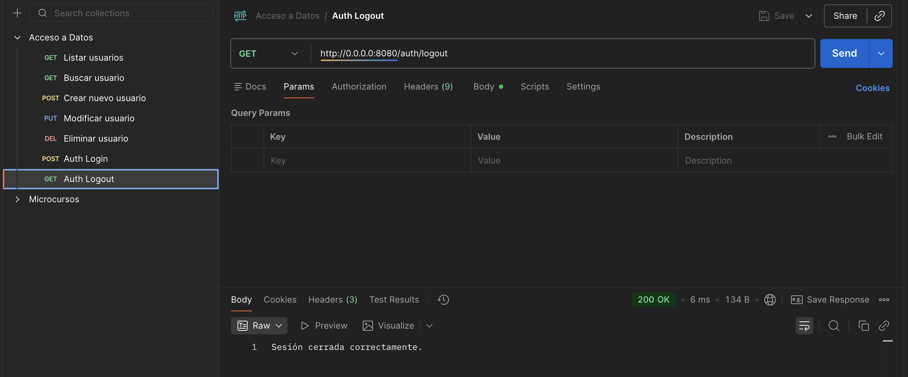
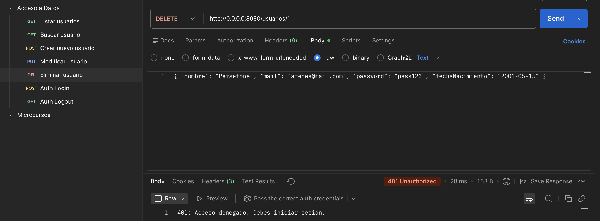

Autenticación y Sesiones
En este bloque, vamos a dotar a nuestra API de una capa de seguridad profesional. Implementaremos un sistema de Sesiones para identificar a los usuarios y restringiremos el acceso a las operaciones sensibles.
1 ¿Por qué Sesiones?
¿Qué estamos haciendo?
HTTP es un protocolo "sin estado" (stateless). Esto significa que el servidor olvida quién eres en cuanto termina la petición. Las Sesiones nos permiten guardar un "carnet de identidad" temporal en el navegador del usuario (usando una Cookie) para que el servidor lo reconozca en futuras visitas.
¿Para qué sirve?
- Seguridad: Permite restringir el acceso a usuarios no identificados.
- Persistencia: Mantiene al usuario logueado sin pedirle la contraseña en cada click.
Configuración del entorno
Antes de empezar, vamos a añadir los módulos de Seguridad y Sesiones a nuestro gestor de dependencias y activar dichos plugins en el arranque del servidor. Sirve para que Ktor reconozca las herramientas de protección. Sin esta configuración, el servidor no sabrá qué hacer cuando encuentre un bloque authenticate y lanzará un error de "Plugin no instalado".
🔍 Actualización de build.gradle.kts
Asegúrate de incluir estos dos módulos esenciales en tu bloque de dependencias:
🔍 Inicialización en el Módulo Principal
Para que el plugin sea detectado, debes llamar a configureSecurity() en tu función de módulo (normalmente en Application.kt o donde configures el servidor), siempre antes de las rutas.
2 Actualización de la Capa de Persistencia (DAO)
Necesitamos realizar la expansión de nuestro Modelo de datos para permitir búsquedas por campos únicos que no son la clave primaria (en este caso, el email).
Para que el sistema de autenticación pueda localizar a un usuario específico mediante su "nombre de usuario" o correo antes de proceder a verificar su identidad con la contraseña.
🔍 Modificación en data/UsuariosDAO.kt
3 Lógica de Dominio y Autenticación
Es la definición del "carnet de identidad" (UserSession) que el servidor entregará al cliente y la lógica de negocio que valida si alguien es quien dice ser.
Tener un objeto de sesión específico en la capa de Domain asegura que sea visible desde todo el proyecto (evitando errores de compilación).
🔍 Nuevo Fichero: domain/UserSession.kt
Para el login solo necesitamos email y password. No usar el DTO general de Usuario, porque Ktor fallará al no recibir el resto de campos.
🔍 Fichero: domain/LoginRequest.kt
El Servicio centraliza la validación para que el controlador no tenga que manejar contraseñas directamente.
🔍 Actualización de services/UsuariosService.kt
3 Configuración de Seguridad: plugins/Security.kt
Vamor ahora a realizar la configuración de los plugins de Sesiones (almacenamiento) y Autenticación (verificación) de Ktor.
Con esto, se permite que el servidor gestione automáticamente las Cookies en el navegador del cliente y define un "desafío" (challenge) para denegar el acceso a quienes intenten entrar en rutas protegidas sin estar logueados.
🔍 Configuración en plugins/Security.kt
4 Rutas de Sesión y Protección: routes/UsuarioRoutes.kt
Actualizamos la implementación de los endpoints de Login/Logout y la delimitación de qué rutas requieren estar identificado.
De esta manera permitiremos al usuario iniciar su sesión voluntariamente. Al usar el bloque authenticate, delegamos en Ktor la tarea de revisar si existe la Cookie de sesión antes de permitir operaciones de borrado o edición.
Importante para visibilidad
Asegúrate de incluir el import: import io.ktor.server.sessions.* y import com.tu.proyecto.domain.UserSession al inicio del archivo de rutas.
🔍 Implementación en routes/UsuarioRoutes.kt
¿Cómo protegemos las rutas?
Ahora podemos crear perímetros de seguridad dentro de nuestra API. Podemos decidir que las rutas de "lectura" sean públicas para que cualquiera pueda ver los datos, pero que las rutas de "escritura o borrado" requieran obligatoriamente que el usuario presente una sesión válida.
🔍 Ejemplo de Protección de Rutas
Observa cómo envolvemos los métodos sensibles dentro de authenticate. Si un usuario intenta usar DELETE sin estar logueado, Ktor responderá automáticamente con el error 401 que definimos en el challenge.
Nota importante: Para este ejemplo, en las rutas GET dejamos expuestos los mails y passwords en la lista de los usuarios, ¡eso no es seguro!. Deberíamos modificar el resultado del DAO para devolver sólo los campos de la tabla que nos interesan que sean públicos.
5 Guía de Pruebas (Rutas Protegidas)
Vamos a poner a prueba el protocolo de verificación para asegurar que los endpoints de autenticación y los bloqueos de seguridad funcionan según lo previsto. Así evaluamos que el flujo de Login emite correctamente la Cookie y que el servidor deniega el acceso (401) cuando dicha Cookie no está presente.
| Método | Endpoint | Body (JSON) / Parámetros | ¿Requiere Login? | Resultado Esperado |
|---|---|---|---|---|
| POST | /auth/login |
{"mail": "atenea@mail.com", "password": "pass123"} |
No | 200 OK + Cookie generada |
| GET | /usuarios |
Ninguno | No | 200 OK + Lista JSON |
| POST | /usuarios |
{ "id": 0, "nombre": "Perseida", "mail": "perseida@mail.com", "password": "pass123", "fechaNacimiento": "2003-10-20" } |
SÍ | 201 Created (Si hay Login) |
| GET | /auth/logout |
Ninguno | No | 200 OK + Cookie eliminada |
| DELETE | /usuarios/1 |
id=1 en URL |
SÍ | 401 Unauthorized (Sin Login) |
Nota sobre el JSON
Recuerda que en el POST y PUT debes configurar en Postman el tipo de cuerpo como raw y seleccionar JSON. Asegúrate de que los nombres de los campos coinciden exactamente con tu UsuarioDTO.
Login y autenticación de usuario registrado
La primera petición http://0.0.0.0:8080/auth/login usando el método POST y pasando un JSON con los parámetros de login mail y password. Si ha ido OK devolverá el Status 200 OK.
En este momento, el usuario está autenticado y puede hacer operaciones reservadas sólo para usuarios autenticados.

Por ejemplo, podemos hacer una petición POST para crear un usuario nuevo (tenemos los permisos para hacerlo).

Logout. Cerrando la sesión
Para terminar la sesión, hacemos la petición a http://0.0.0.0:8080/auth/logout usando el método GET. Esto destruye la sesión existente.
En este momento, el usuario ya no está autenticado y no podrá hacer operaciones restringidas.

Si intentamos borrar un usuario ya no podremos. ¡Estamos asegurando el acceso a nuestros datos!

6 Estructura Final del Proyecto
Así queda organizada nuestra arquitectura MVC segura:
🎯 Práctica 5. Auditoría de Seguridad y Estructura
Tarea de Verificación Total
Para completar esta unidad, debes validar que cada componente de la arquitectura cumple su función. Sigue este orden estrictamente:
- Verificación de Estructura: Comprueba que tienes los 10 archivos principales distribuidos en los 6 paquetes (
core,data,domain,services,routes,plugins) tal como indica el esquema superior. - Verificación de Arranque: Ejecuta la aplicación y confirma que en los logs de la consola aparece tanto la conexión exitosa a MySQL como el inicio del motor Netty sin errores de "MissingPlugin".
- Test de Intrusión (Fallo esperado): Abre Postman e intenta borrar un usuario (
DELETE /usuarios/1).- Resultado esperado: Código 401 Unauthorized. Si el borrado funciona, revisa el bloque
authenticate.
- Resultado esperado: Código 401 Unauthorized. Si el borrado funciona, revisa el bloque
- Test de Autenticación: Realiza el Login (
POST /auth/login) con credenciales válidas.- Resultado esperado: Mensaje de bienvenida y aparición de la cookie
USER_SESSIONen la pestaña Cookies de Postman.
- Resultado esperado: Mensaje de bienvenida y aparición de la cookie
- Test de Operación Protegida: Con la sesión activa, repite el borrado o crea un usuario.
- Resultado esperado: Código 200 OK o 201 Created.
- Test de Cierre: Ejecuta
/auth/logoute intenta de nuevo una operación protegida.- Resultado esperado: Retorno al estado 401 Unauthorized.
¡Si has superado todos los puntos, tu API es segura y profesional!